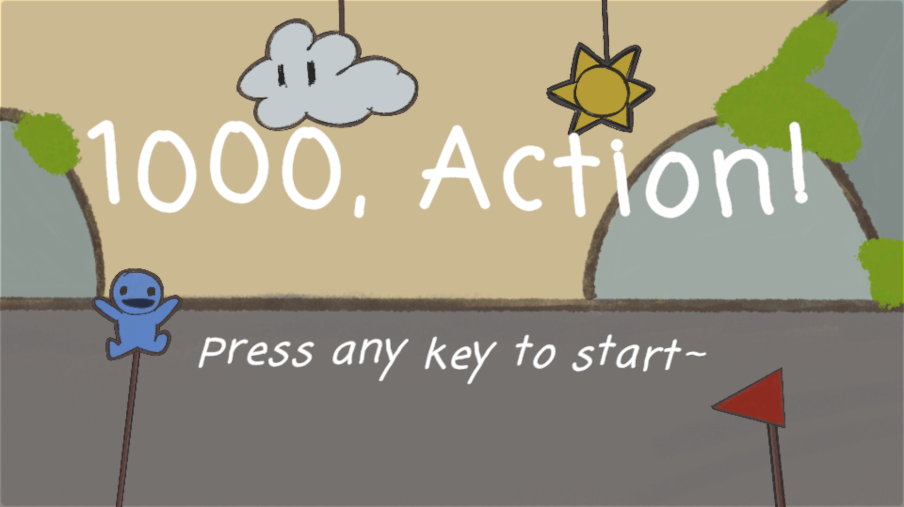
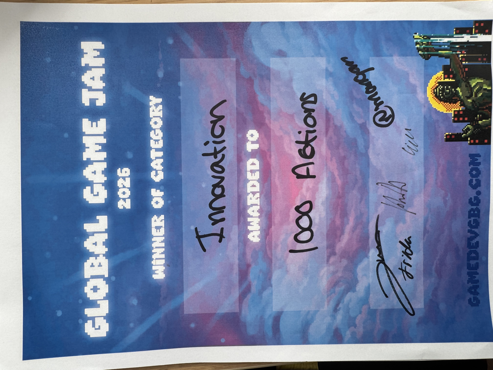
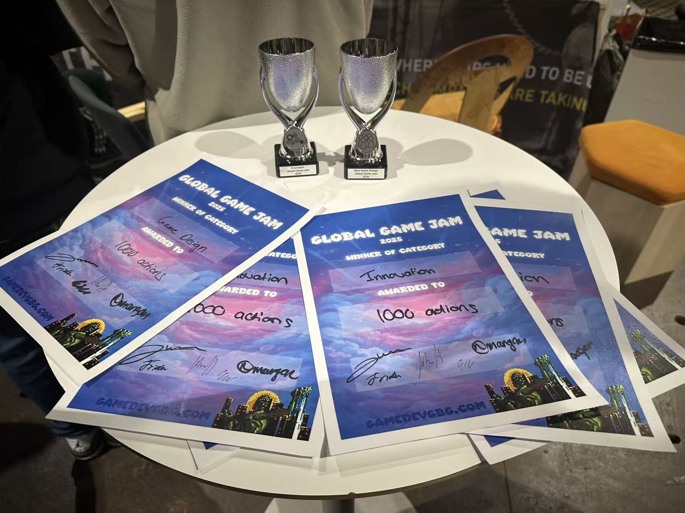
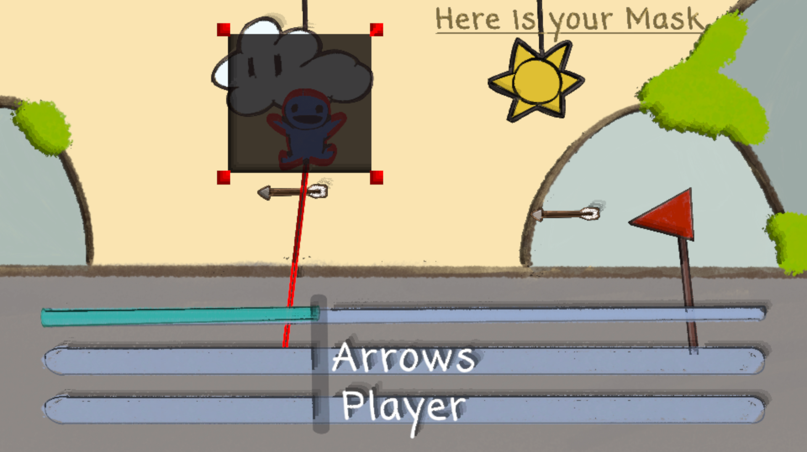

What if reality behaved like a video editor?
A Global Game Jam prototype built around a mask-and-timeline system: isolate part of the scene, scrub time, and solve each level by editing movement instead of only reacting to it.
The Overview
1000, Action! is a puzzle platformer prototype created for Global Game Jam 2026. The project started from a simple underlying thought: what if a mask could hide objects in the scene and change the current state of the puzzle?
The real innovation came when that masking logic was extended to the timeline itself. Instead of only covering objects spatially, the mask could cover the timeline layer almost like a video-editing tool. In practice, that means the player is not only blocking what is visible, but also blocking the objects and events that exist on that layer of time.
That shift turns the game from a neat masking prototype into a much stronger design statement. The mask can still change the present state and demonstrate technical implementation, but more importantly, it becomes a way to edit causality. That framing also makes the project stand out as a jam piece. Global Game Jam describes itself as the world's largest game creation event, so presenting a mechanic this unusual inside that format gave the project extra weight: it was not only a fast prototype, but a concise statement about experimentation through design.
Core Mechanic
Masking Space
The first layer of the mechanic is spatial. The mask can hide objects and directly change the current state of the level, proving that the core interaction works in a readable and functional way.
Masking Time
The second layer is where the design becomes unique: the mask can cover the timeline itself. That makes it feel like video editing, because the player is effectively hiding what exists on that time layer rather than only hiding a visible prop.
From the source structure and playable build, the game supports a proper menu flow and a short sequence of levels, which helps the idea read as more than a one-screen gimmick. The value here is not just novelty; it is that the novelty is organized into a teachable interaction loop.
Level-Driven Innovation
What makes the project stronger is that the mask is not left as a single trick. Later levels push the idea into more specific design situations and prove that the interaction can support real puzzle invention.
- Level 4: masking objects is not enough to solve the puzzle. The only way through is to mask the player and keep them suspended in mid-air.
- Level 6: a sound cue represents lightning. To survive the obstacle and progress, the player has to mask the sound itself.
- Design progression: the mechanic evolves from hiding things, to hiding time, to hiding the very condition that defines what can happen.
Recognition
The project received Best Game Design and Best Innovation. Those two awards fit the work well: one speaks to how cleanly the mechanic was structured, and the other acknowledges how unusual the core interaction felt for a jam prototype.
Best Game Design
Recognition for the strength, clarity, and teachability of the core puzzle system.
Best Innovation
Recognition for turning a strong metaphor into a mechanic players can immediately feel.



Visual Notes
The art direction stays intentionally lightweight and hand-drawn, which helps the time-editing mechanic remain the focus. Instead of covering the concept with spectacle, the project uses simple shapes, bright contrasts, and readable props to keep attention on interaction.

The Frozen moment is a good example of how the idea grows beyond object masking: the player has to suspend the player state itself, not just remove a prop from the route.